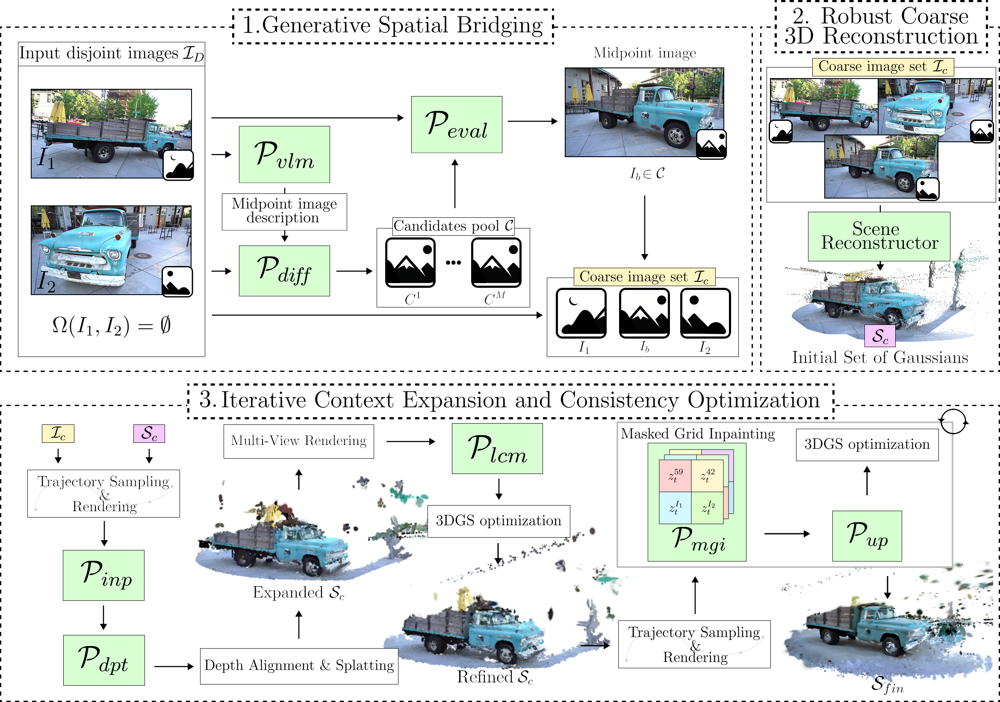
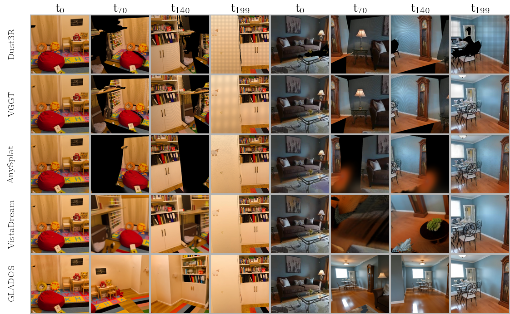
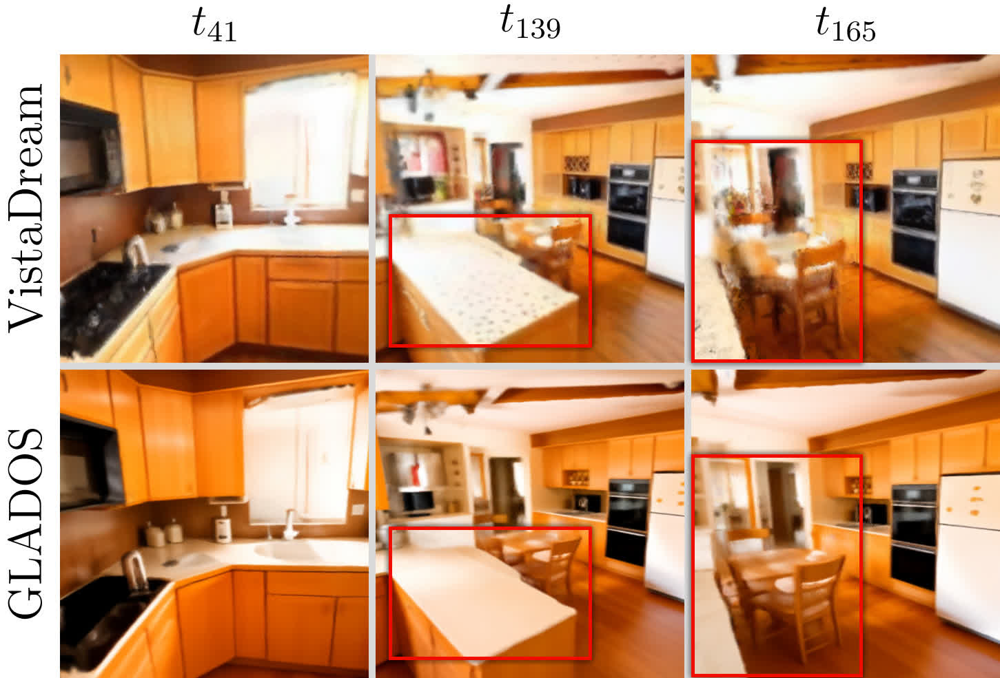
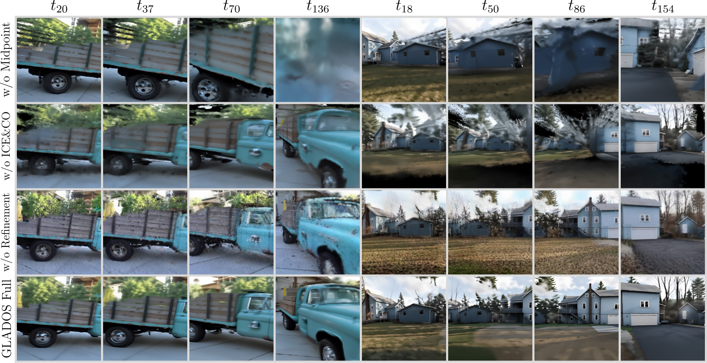

Abstract
Video
Method

The GLADOS pipeline consists of three main stages. First, Generative Spatial Bridging synthesizes a semantic anchor image to connect the disjoint input views, producing the augmented triplet \(I_c\). Second, Robust Coarse 3D Reconstruction aligns this augmented set to initialize a coarse 3D Gaussian Splatting scene \(S_c\). Finally, Iterative Context Expansion and Consistency Optimization expand the scene using an inpainting prior \(P_{inp}\) and a Latent Consistency Model \(P_{lcm}\), while our custom Anchored Grid Inpainting \(P_{mgi}\) together with super-resolution \(P_{up}\) iteratively eliminates residual holes to yield a metrically accurate, completed reconstruction \(S_{fin}\).
Results
Reconstruction from two disjoint views

Reconstruction consistency between GLADOS and other methods. Purely reconstruction-based methods (Dust3R, VGGT, AnySplat) fail to produce a consistent scene, exhibiting major artifacts even for the observed regions (\(t_0\), \(t_{199}\)). VistaDream produces less coherent results (left) or fails entirely in generating a probable scene (right). GLADOS maintains structural fidelity in observed regions while plausibly hallucinating the unobserved intermediate space.
| Method | CLIP ↑ | FID ↓ | MEt3R ↓ | GeCoM ↓ | GeCoD ↓ | GeCoF ↓ | Photo ↓ | Rec. Fail ↓ |
|---|---|---|---|---|---|---|---|---|
| AnySplat | 23.032 | 304.002 | 0.039 | 0.023 | 0.503 | 0.313 | 0.077 | 0 |
| VGGT | 22.751 | 275.245 | 0.043 | 0.029 | 0.109 | 0.075 | 0.132 | 0 |
| Dust3r | 22.834 | 292.270 | 0.045 | 0.048 | 0.147 | 0.101 | 0.179 | 3 |
| VistaDream | 23.272 | 226.189 | 0.037 | 0.049 | 0.131 | 0.092 | 0.160 | 4 |
| GLADOS (ours) | 23.559 | 234.560 | 0.032 | 0.012 | 0.045 | 0.032 | 0.097 | 0 |
Table 1. Quantitative comparison on the proposed disjoint-view benchmark using only two non-overlapping input images. GLADOS achieves the best performance across most geometric metrics (MEt3R, GeCoM, GeCoD, GeCoF) as well as the highest CLIP score, and does not exhibit reconstruction failures on any scene.
Closing residual holes and textural blur

Using the same input and midpoint images, VistaDream exhibits residual geometric voids (\(t=139\)) and textural blur (\(t=165\)). GLADOS eliminates these artifacts via its Anchored Grid Inpainting and super-resolution refinement loop, producing a high-fidelity, complete 3D scene.
Effect of Generative Spatial Bridging on baselines
| Method (+ Bridging) | CLIP ↑ | FID ↓ | MEt3R ↓ | GeCoM ↓ | GeCoD ↓ | GeCoF ↓ | Photo ↓ | Rec. Fail ↓ |
|---|---|---|---|---|---|---|---|---|
| AnySplat | 23.572 | 283.045 | 0.046 | 0.030 | 0.220 | 0.163 | 0.103 | 0 |
| VGGT | 22.927 | 279.830 | 0.043 | 0.041 | 0.085 | 0.065 | 0.148 | 0 |
| Dust3r | 22.969 | 267.033 | 0.048 | 0.057 | 0.215 | 0.141 | 0.173 | 0 |
| VistaDream | 23.127 | 206.169 | 0.034 | 0.048 | 0.107 | 0.085 | 0.158 | 0 |
| GLADOS (ours) | 23.559 | 234.560 | 0.032 | 0.012 | 0.045 | 0.032 | 0.097 | 0 |
Table 2. When all baselines are augmented with our Generative Spatial Bridging strategy, Dust3r no longer collapses on hard scenes, yet improvements remain inconsistent. Across both geometric and perceptual metrics, GLADOS consistently achieves the strongest overall performance.
Ablation study

Qualitative ablation. The left four columns show views of the Truck scene from Tanks & Temples; the right four columns depict results for scene 185 from RealEstate10K. Without Generative Spatial Bridging (w/o Midpoint) the system fails to register; bypassing iterative expansion (w/o ICE&CO) leads to geometric collapse on scenes with significant translation; halting before refinement (w/o Refinement) leaves residual holes and missing structural patches. The full pipeline resolves these artifacts.
| Configuration | CLIP ↑ | FID ↓ | MEt3R ↓ | GeCoM ↓ | GeCoD ↓ | GeCoF ↓ | Photo ↓ | Rec. Fail ↓ |
|---|---|---|---|---|---|---|---|---|
| w/o Midpoint | 23.589 | 263.144 | 0.031 | 0.046 | 0.129 | 0.090 | 0.169 | 4 |
| w/o ICE&CO | 23.770 | 310.579 | 0.041 | 0.054 | 0.114 | 0.092 | 0.189 | 0 |
| w/o Refinement | 23.127 | 206.169 | 0.034 | 0.048 | 0.107 | 0.085 | 0.158 | 0 |
| GLADOS Full | 23.559 | 234.560 | 0.032 | 0.012 | 0.045 | 0.032 | 0.097 | 0 |
Table 3. Ablation of GLADOS components. Bypassing spatial bridging (w/o Midpoint) causes 4 reconstruction failures. Omitting iterative expansion and consistency optimization (w/o ICE&CO) severely degrades structural integrity. Halting before the final refinement (w/o Refinement) worsens GeCo and MEt3R. The full method optimally balances robustness and geometric fidelity.